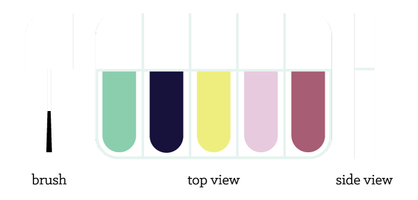

How many bottles of nail polish do you (or your significant other, sister, mom, etc.) own? Now, out of those bottles, how many of them have been used more than halfway?
Nail polish is wasteful. Standard sizes of nail polish are sold at an excess of 0.35 fl oz., with smaller amounts marketed as “travel-sized,” and few will ever run out, if even used an appreciable amount.
0.40 fl oz.
0.40 fl oz.
0.50 fl oz.
0.46 fl oz.
0.50 fl oz.
Many colors will only be worn a few times before being confined to the cabinets and shoeboxes of the world, and thus cosmetic companies strive to sell as much as possible to maximize profits. When sold in this manner, the polish itself and the glass and plastics of the packaging are being wasted; they will rarely be reused or recycled, making nail polish both an economic and an environmental problem.
What if nail polish was designed for the consumer, instead of the corporation?
A thin profile holds a more useable amount of nail polish (0.05-0.10 fl oz.) per compartment and makes the container easier to ship.
Selling polish in sets not only allows for exploration of trends and colors, but also makes selling smaller quantities more feasable.
Composed fully of recycleable materials, the packaging would be ecologically friendly, especially due to its smaller size.
Enthusiasts often enjoy owning collections, which is the antithesis of this product, especially because the new packaging is designed to have the nail polish used in its entirety.
Brand name recognition, or associating brands with certain qualities or lifestyles, is essential in the cosmetics industry; there is a high barrier of entry of both time and money in the market.
The aforementioned limitations may be addressed with sufficient marketing and partnerships. That is, the new container should be marketed as a supplement for a collection, as it introduces an eco-friendly way to try out trendier, bolder, or more seasonal colors without buying whole bottles, rather than as a replacement.
An association with high reputation would be difficult to develop, and cosmetic brands would likely shun this idea because of the high overheads they currently maintain with nail polish, but with a partnership with a household name which does not currently have a fully established makeup brand would grant the product reach and perceived legitimacy in an already-present market.
Made, marketed, and sold correctly, such as through in-store booths or online channels which would allow for custom palettes and seasonal color combinations, this method of packaging could provide a more economically and environmentally sound way for consumers to enjoy nail polish.
A thought experiment by Ethan Chiou. Inspired by this. Special thanks to Amy, Anne, Charlene, and Viviana.